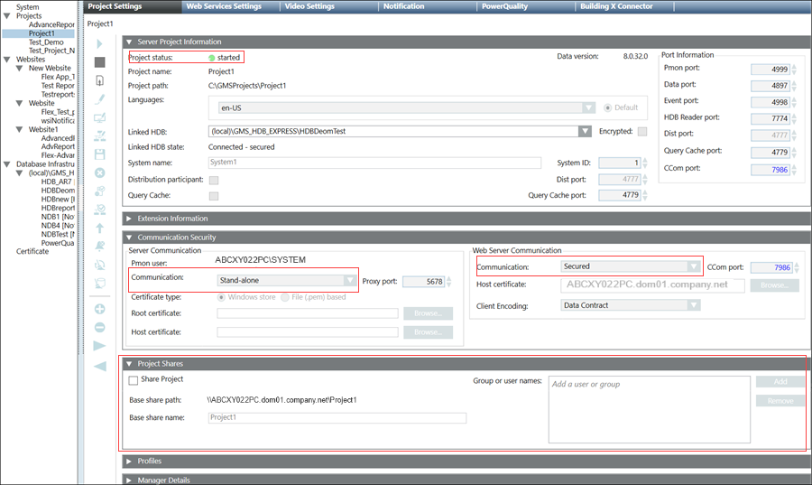

Modify the Server Project Parameters
For launching the Desigo CC Windows app client on the remote web server (IIS), it is recommended to set the Server Communication as Stand-alone and the Web Server Communication as Secured in the Communication Security expander in SMC. For Server with a local web server (IIS), you can, however, leave the Server Communication as Stand-alone and the Web Server Communication as Local.
You also must share the Server project with the website/web application user using the Project Shares expander.
- The Server project that you want to link to web application is after creation / restore available under the Projects and is
Stopped.
- In the SMC tree, select Projects > [project].
- Click Edit
 .
. - Some fields of the Server Project Information and Communication Security expanders are enabled.
- In the Communication Security expander, do not modify the default (
Stand-alone) Communication mode. - In the Communication Security expander, provide the Web Server Communication details as follows:
- For working with local web server (IIS): Change the default Communication mode (
Disabled) by selecting Local from the drop-down list. This enables the communication between the CCom port and web server (IIS), without certificates. - For working with remote web server (IIS): (recommended) Change the default Communication mode as Secured from the drop-down list. This enables a secured communication between the CCom port and web server (IIS).
- Configure a unique the CCom port number, if required, by changing the default.
- (Applicable only for Web Server Communication as Secured) Verify the default set host certificate for CCom port. For more information, see tips in Select Certificate Dialogue Box.
- (Applicable only for Web Server Communication as Secured/ Local) In the Web Server Communication, select the Client Encoding type from the drop-down list. In the Client Encoding drop-down list, by default, Data Contract is displayed. .
- Using the Project Shares expander, you need to share the Server project with the website/web application (IIS) user as follows:
- Select the Share Project check box to share project folder of the current project.
- If required, type in the Base share name to change the default set, the Project name.
- Click Add to add the website/web application user to the list of Group or user names using the Select User or Group dialog box.
- Click Save Project
 .
. - If you have changed the Communication Security settings including the Web Communication mode, CCom port, or a CCom Host certificate, a message displays indicating you that you must align the Web applications on Client/FEP linked with this modified Server Project.
